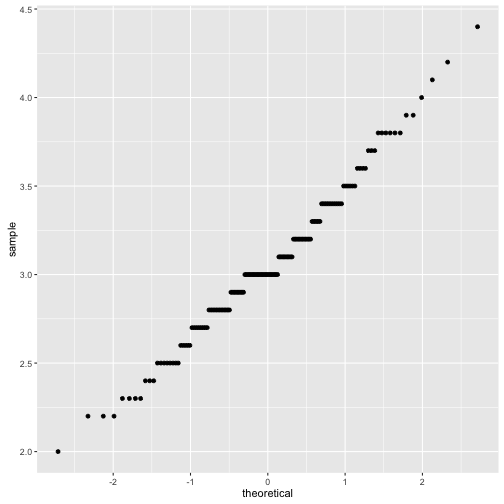
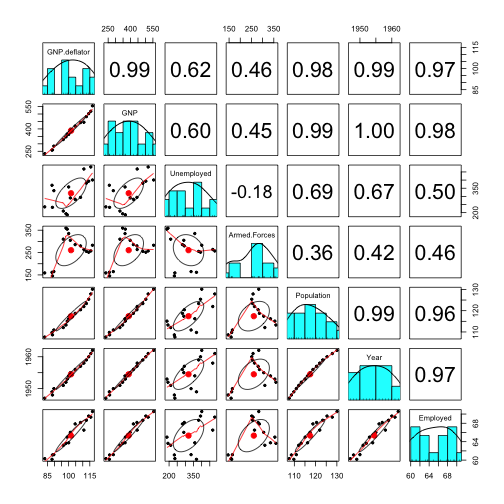
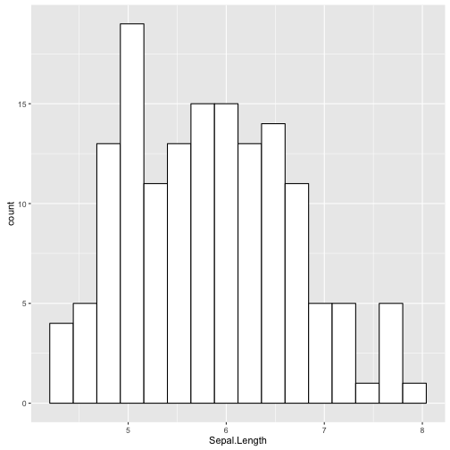
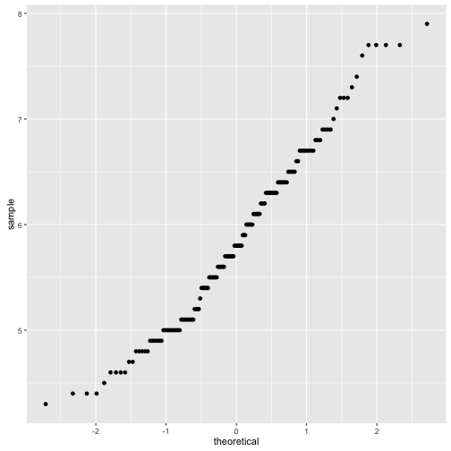
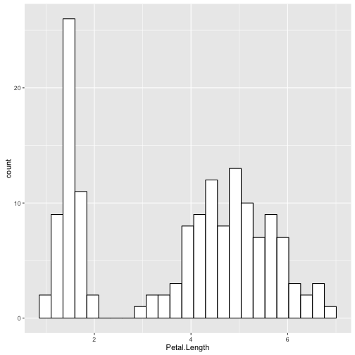
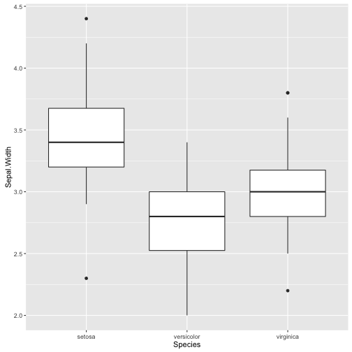
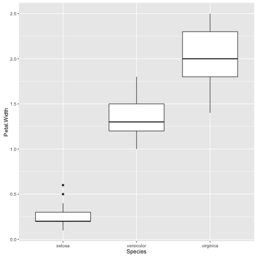
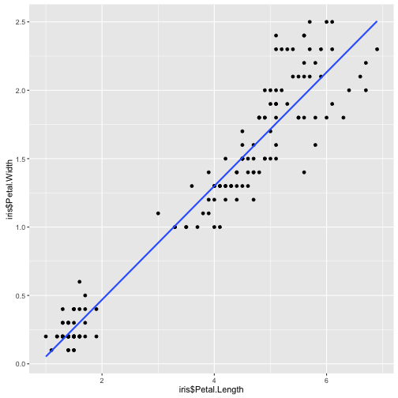

Parametric Assumptions & Correlations
Jenna Blumenthal
Tutorial #: 2
MIE 1402
By now...
- You have R, R Studio installed
- You have played around with it (imported some data, ran some commands)
- You have followed an example from the textbook
Today
- Assumptions
- basis for parametric tests
- normality, homogeneity of variance
- Correlations
- general procedure in R
- partial, semi-partial, non-parametric statistics
- Assignment 1
Data we will be using
library(knitr)
kable(head(iris), align = "c")
| Sepal.Length |
Sepal.Width |
Petal.Length |
Petal.Width |
Species |
| 5.1 |
3.5 |
1.4 |
0.2 |
setosa |
| 4.9 |
3.0 |
1.4 |
0.2 |
setosa |
| 4.7 |
3.2 |
1.3 |
0.2 |
setosa |
| 4.6 |
3.1 |
1.5 |
0.2 |
setosa |
| 5.0 |
3.6 |
1.4 |
0.2 |
setosa |
| 5.4 |
3.9 |
1.7 |
0.4 |
setosa |
Assumption of parametric data
Most stats we are used are parametric tests, based on the normal distribution.
ggplot(iris, aes(Sepal.Width)) + geom_histogram(aes(iris$Sepal.Width), fill = "white", colour = "black", bins = 25)

shapiro.test(iris$Sepal.Width)
##
## Shapiro-Wilk normality test
##
## data: iris$Sepal.Width
## W = 0.98492, p-value = 0.1012
Step 1: Visual Inspection
Normal
ggplot(iris, aes(Sepal.Width)) + geom_histogram(aes(iris$Sepal.Width), fill = "white", colour = "black", bins = 25)

qplot(sample = iris$Sepal.Width)

Step 1: Visual Inspection
Positive skew
ggplot(iris, aes(Petal.Width)) + geom_histogram(aes(iris$Petal.Width), fill = "white", colour = "black", bins = 16)

qplot(sample = iris$Petal.Width)

Step 1: Visual Inspection
Negative kurtosis (platykurtic)
ggplot(iris, aes(Sepal.Length)) + geom_histogram(aes(iris$Sepal.Length), fill = "white", colour = "black", bins = 16)

qplot(sample = iris$Sepal.Length)

Step 2: Numeric
library(pastecs)

round(stat.desc(iris$Sepal.Width, norm = TRUE), 2)
## nbr.val nbr.null nbr.na min max
## 150.00 0.00 0.00 2.00 4.40
## range sum median mean SE.mean
## 2.40 458.60 3.00 3.06 0.04
## CI.mean.0.95 var std.dev coef.var skewness
## 0.07 0.19 0.44 0.14 0.31
## skew.2SE kurtosis kurt.2SE normtest.W normtest.p
## 0.79 0.14 0.18 0.98 0.10

round(stat.desc(iris$Petal.Length, norm = TRUE), 2)
## nbr.val nbr.null nbr.na min max
## 150.00 0.00 0.00 1.00 6.90
## range sum median mean SE.mean
## 5.90 563.70 4.35 3.76 0.14
## CI.mean.0.95 var std.dev coef.var skewness
## 0.28 3.12 1.77 0.47 -0.27
## skew.2SE kurtosis kurt.2SE normtest.W normtest.p
## -0.68 -1.42 -1.80 0.88 0.00
Step 3: Statistical tests
Normal distribution
shapiro.test(iris$Sepal.Width)
##
## Shapiro-Wilk normality test
##
## data: iris$Sepal.Width
## W = 0.98492, p-value = 0.1012
Non-normal distribution...
shapiro.test(iris$Sepal.Length)
##
## Shapiro-Wilk normality test
##
## data: iris$Sepal.Length
## W = 0.97609, p-value = 0.01018
...Unless grouped by species
by(iris$Sepal.Length, iris$Species, shapiro.test)
## iris$Species: setosa
##
## Shapiro-Wilk normality test
##
## data: dd[x, ]
## W = 0.9777, p-value = 0.4595
##
## --------------------------------------------------------
## iris$Species: versicolor
##
## Shapiro-Wilk normality test
##
## data: dd[x, ]
## W = 0.97784, p-value = 0.4647
##
## --------------------------------------------------------
## iris$Species: virginica
##
## Shapiro-Wilk normality test
##
## data: dd[x, ]
## W = 0.97118, p-value = 0.2583
Testing for homogeneity of variance
Variance in each population is equal

library(car)
leveneTest(Sepal.Width ~ Species, data = iris)
## Levene's Test for Homogeneity of Variance (center = median)
## Df F value Pr(>F)
## group 2 0.5902 0.5555
## 147
Variance in each population is not equal
ggplot(iris, aes(x=Species,y=Petal.Width)) + geom_boxplot()

leveneTest(Petal.Width ~ Species, data = iris)
## Levene's Test for Homogeneity of Variance (center = median)
## Df F value Pr(>F)
## group 2 19.892 0.00000002261 ***
## 147
## ---
## Signif. codes: 0 '***' 0.001 '**' 0.01 '*' 0.05 '.' 0.1 ' ' 1
Correlation
Standardized covariance
\[ r = \frac{cov_{xy}}{s_{x}s_{y}}\]
Correlation in r
cor.test(iris$Petal.Length, iris$Petal.Width, method = "pearson")
##
## Pearson's product-moment correlation
##
## data: iris$Petal.Length and iris$Petal.Width
## t = 43.387, df = 148, p-value < 2.2e-16
## alternative hypothesis: true correlation is not equal to 0
## 95 percent confidence interval:
## 0.9490525 0.9729853
## sample estimates:
## cor
## 0.9628654
Plotting the correlation and line of best fit
ggplot(iris, aes(iris$Petal.Length, iris$Petal.Width)) + geom_point() + geom_smooth(method = "lm", se = FALSE)

Partial, Semi-Partial, Non-parametric
library(ggm)
cor(iris$Petal.Length, iris$Sepal.Length)
## [1] 0.8717538
pcor(c("Petal.Length", "Sepal.Length", "Petal.Width"), var(iris))
## [1] 0.5420163
cor.test(iris$Petal.Length, iris$Petal.Width, method="spearman")
cor.test(iris$Petal.Length, iris$Petal.Width, method="kendall")